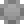

Filter¶
Aberration¶

生成溢色效果
{kind=link}
控制¶


AntiAliasing¶
抗锯齿, 和模糊的区别是可以接受小数点级别的参数
控制¶
 HeatDistort¶
HeatDistort¶
用于快速制作热能置换效果
注解
此节点带有动画效果
控制¶

 HighPassSharpen¶
HighPassSharpen¶
高通锐化
hard 模式¶

soft 模式¶

highpass only 模式¶
控制¶

 mosaic¶

马赛克效果
Vignette¶
压暗角
wlf_MotionBlur¶
对Nuke自带MotionBlur节点的包装, 会英文直接用自带的就行
控制¶
WeightedErode¶

效果类似Nuke内置的 FilterErode，
但是使用图像作为权重而不是固定的 size 值，所以能够为图上每个位置设置不同的 Erode 强度。
权重图像不支持负数，FilterErode 的负数效果需设置 mode 为 dilate。

输入 |
功能 |
|---|---|
<无名称> |
输入图像 |
weight |
权重图像。4个通道分别指定上右下左方向的查询距离，小于0的值视为0。 |
控制 |
功能 |
||||
|---|---|---|---|---|---|
mode |
计算模式，默认为收边(取范围内的最小值)，选择此项改为扩边效果(取范围内的最大值) |
||||
channel |
输入输出通道 |
||||
multiply |
weight图像数值的乘法系数 |
||||
shape |
扩边形状，默认为矩形，使用圆形时仅使用权重图像的r通道作为圆形半径。 |
||||
filter |
过滤算法，参见Nuke内置节点 |
|
的 |
|
控制。 |
mix |
计算后的结果和计算前的结果进行混合 |
SoftGlow¶
实现自定义衰减的 glow 效果。
内部使用多个原生 Glow 节点叠加。
输入 |
功能 |
|---|---|
<无名称> |
输入图像 |
width |
宽度通道输入 |
控制 |
功能 |
|---|---|
size |
辉光尺寸 |
tint |
辉光染色 |
tolerance |
辉光阈值，低于此值的像素不影响辉光。 |
saturation |
辉光饱和度 |
brightness |
辉光亮度 |
width channel |
宽度通道，为每个像素单独指定尺寸百分比， 1 代表 100%。 连接 width 输入时从 width 输入取，否则从默认输入取。 |
level |
辉光级数，越高渲染越慢。最大为 10，为 1 时效果同原生 Glow。 |
ratio |
下一级辉光相对于上一级辉光的比例, 1 代表 100% |
operation |
效果的叠加模式 |
effect only |
是否只输出显示效果，不输出原图。 |
filter |
辉光模糊算法 |
mix |
计算后的结果和计算前的结果进行混合 |